La plateforme permet au CNBM de recenser tous les techniciens de laboratoire et biologistes médicaux de la RDC, province par province : identité, contacts, adresse, diplômes, carrière, lieux de travail, formations, situation d'adhésion (carte, serment, cotisations), photo passeport et vidéo de présentation.
Elle fonctionne sur téléphone (Android, iPhone) et sur ordinateur, avec ou sans Internet. Internet n'est nécessaire que pour l'installer la première fois et pour envoyer les fiches.
Les trois espaces
Espace
Pour qui
Comment y entrer
👤 Espace membre
Techniciens de laboratoire, biologistes médicaux, candidats à l'adhésion
Un compte créé avec son numéro de téléphone ou son e-mail et un mot de passe
🏛️ Espace responsables
Administrateurs d'un conseil provincial (ex. Nord-Kivu) ou du bureau national
Un compte administrateur activé avec la clé d'abonnement du conseil
✍️ Espace créateur
Le créateur de la plateforme, qui délivre les abonnements
Le fichier de clé privée du créateur
Les adresses
Application (membres et responsables) : https://jacquesdunia2015-commits.github.io/JACK_M/cnbm/
Les membres n'utilisent pas l'adresse ci-dessus directement : ils ouvrent le lien d'inscription de leur conseil provincial, qui les rattache automatiquement à ce conseil.
Le circuit en un coup d'œil
Le créateur délivre un abonnement au conseil provincial → le conseil reçoit une clé d'abonnement et un lien d'inscription.
L'administrateur du conseil crée son compte avec la clé, puis partage le lien d'inscription aux membres (WhatsApp, e-mail).
Chaque membre ouvre le lien, crée son compte, remplit sa fiche, vérifie son dossier (récapitulatif) et l'envoie par e-mail au conseil.
L'administrateur importe les fiches reçues, accepte les adhésions, et obtient la liste complète en Excel.
Trois façons de recevoir les fiches
📱 Sans réception automatique
☁️ Google Drive (gratuit) — recommandé aujourd'hui
🖥️ Serveur (plus tard)
Coût
Gratuit
Gratuit (compte Gmail du conseil)
Abonnement d'hébergement
Envoi des fiches
Par e-mail, puis import par le conseil
Automatique dès que le membre a Internet, directement dans l'espace du conseil. Ni e-mail, ni WhatsApp
Automatique, comme Google Drive
Registre du conseil
Import manuel des pièces jointes
Mis à jour par « 🔄 Synchroniser »
Mis à jour par « 🔄 Synchroniser »
Comptes
Valables sur l'appareil où ils ont été créés
Utilisables sur n'importe quel appareil
Le petit nuage ☁️ à côté de « En ligne », en haut de l'écran, indique que la réception automatique est active. Dans tous les cas, on peut remplir sa fiche sans Internet ; la fiche part dès que la connexion revient.
Technicien de laboratoire, biologiste médical ou candidat à l'adhésion
A1. Installer l'application
Ouvrez le lien d'inscription envoyé par votre conseil provincial (WhatsApp, SMS ou e-mail). Pour retrouver l'application facilement, installez-la sur votre écran d'accueil :
Android (Chrome) : menu ⋮ en haut à droite → « Installer l'application » ou « Ajouter à l'écran d'accueil ».
Ordinateur (Chrome, Edge) : icône d'installation dans la barre d'adresse, ou menu → « Installer ».
Une fois installée, l'application s'ouvre même sans Internet. L'indicateur en haut à droite affiche 🌐 En ligne ou 📴 Hors ligne.
A2. Créer son compte
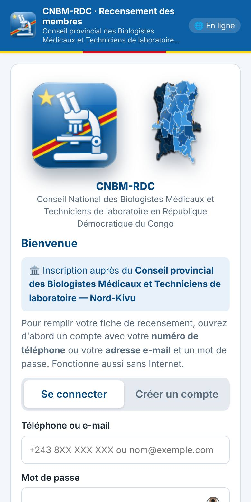
L'écran d'accueil indique le conseil auquel vous vous inscrivez.
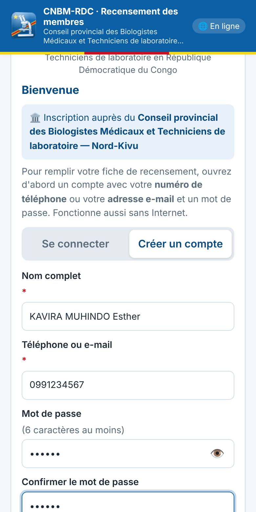
Onglet « Créer un compte ».
Vérifiez en haut que le nom de votre conseil provincial est affiché (« Inscription auprès du … »).
Touchez « Créer un compte ».
Saisissez votre nom complet.
Saisissez votre numéro de téléphone (ex. 0991234567 ou +243 991 234 567) ou votre adresse e-mail. C'est votre identifiant de connexion.
Choisissez un mot de passe d'au moins 6 caractères et confirmez-le. L'icône 👁️ permet de voir ce que vous tapez.
Touchez « Créer mon compte ».
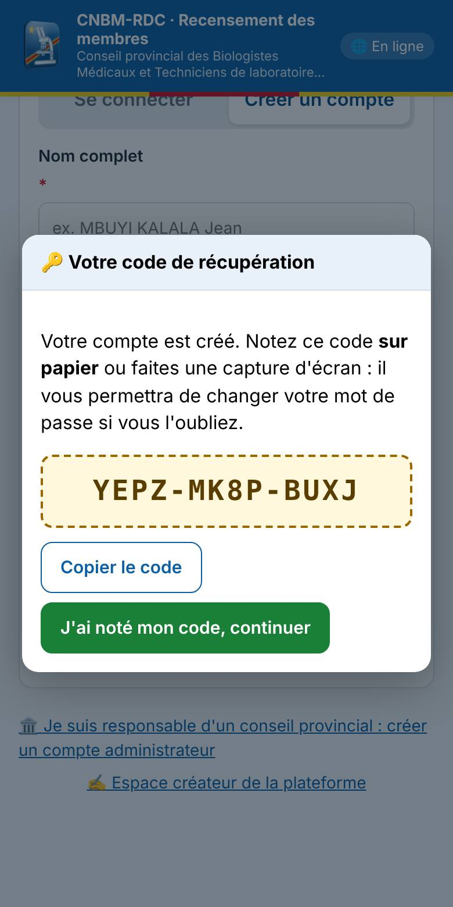
Le code de récupération s'affiche une seule fois.
Un code de récupération s'affiche (ex. R3VU-D4QU-DQL5). Notez-le sur papier ou faites une capture d'écran. C'est le seul moyen de changer votre mot de passe si vous l'oubliez. Touchez ensuite « J'ai noté mon code, continuer ».
A3. Se connecter, mot de passe oublié
Se connecter : onglet « Se connecter », votre téléphone ou e-mail, votre mot de passe. Vous restez connecté jusqu'à ce que vous vous déconnectiez.
Mot de passe oublié : « Mot de passe oublié ? » → votre téléphone/e-mail → votre code de récupération → un nouveau mot de passe.
Code perdu aussi : demandez à un administrateur de votre conseil de réinitialiser votre mot de passe (il doit le faire sur l'appareil où vous avez créé votre compte).
Mon compte : touchez votre nom en haut à droite pour changer de mot de passe, obtenir un nouveau code de récupération ou vous déconnecter.
Après 5 mots de passe incorrects, le compte est bloqué 5 minutes.
A4. Remplir sa fiche
Après la connexion, l'onglet 📝 Ma fiche s'ouvre. Les champs marqués d'une étoile rouge * sont obligatoires. Tout est enregistré automatiquement à chaque saisie : vous pouvez vous arrêter et reprendre plus tard.
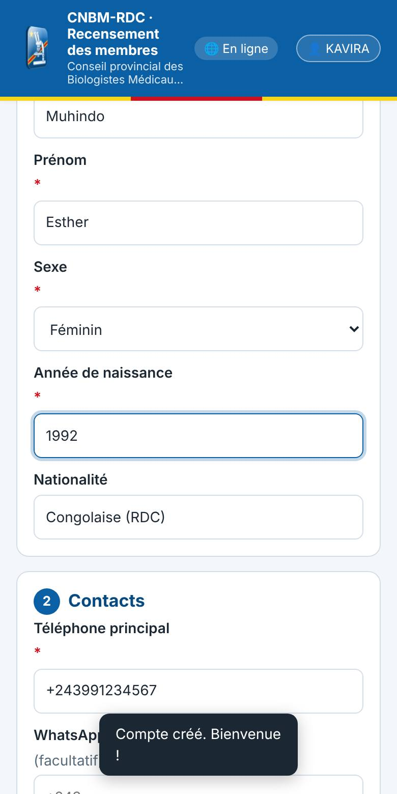
Début de la fiche : section 1, Identité.
Section
Ce qu'on vous demande
1. Identité
Nom, postnom, prénom (comme sur votre pièce d'identité ou diplôme), sexe, année de naissance, nationalité
2. Contacts
Téléphone principal, WhatsApp ou 2ᵉ numéro, e-mail
3. Adresse physique
N° de parcelle, avenue, quartier, commune (ou secteur/chefferie), ville ou territoire, pays, province
4. Profil professionnel
Catégorie, diplôme le plus élevé, spécialité, école, année d'obtention du diplôme, année du premier diplôme. Carrière : année de début du travail, établissement et lieu du premier emploi, années d'expérience (calculées automatiquement, modifiables en cas d'interruption)
5. Lieux de travail
Pour chaque hôpital, centre de santé ou laboratoire où vous exercez : nom, type, fonction occupée, service, année de début, zone de santé, ville/territoire, pays, province. Bouton « ➕ Ajouter un autre lieu de travail »
Êtes-vous membre ? Année d'adhésion, carte de membre (oui/non) et n°, serment prêté (oui/non) et année, cotisations à jour, nombre de mois payés, dernier mois payé
8. Photo et vidéo
Photo passeport (recommandée), vidéo de présentation (facultative)
9. Pièces justificatives
Vos documents : diplômes, carte d'identité ou passeport, carte de membre, attestation de serment, carte de service, certificats de formation…
10. Consentement
Case à cocher : vous attestez l'exactitude des informations et acceptez leur transmission au CNBM
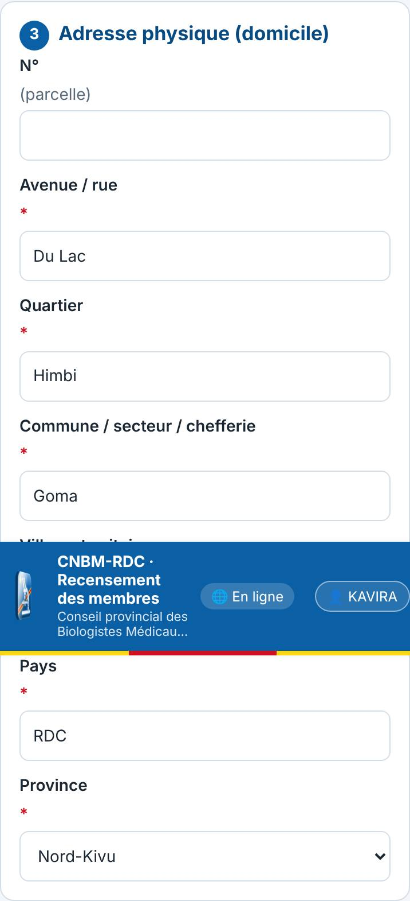
Section 5 : un bloc par lieu de travail.
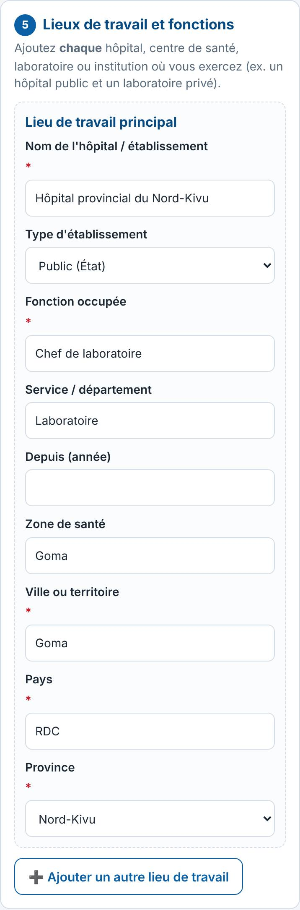
Section 7 : situation d'adhésion au CNBM.
Si vous travaillez hors de la RDC, écrivez le pays (ex. « Angola ») : la province devient automatiquement « Hors RDC ».
A5. Photo passeport et vidéo
Photo passeport : deux possibilités, au choix.
« 📸 Prendre la photo maintenant » : la caméra s'ouvre dans la plateforme. Placez le visage dans l'ovale (de face, fond clair, bonne lumière), touchez « 📸 Prendre la photo », puis « ✅ Utiliser cette photo » ou « ↩️ Reprendre ». « 🔄 Changer de caméra » passe à la caméra arrière (pratique pour photographier un collègue).
« 📁 Choisir une photo » : une photo déjà enregistrée sur l'appareil. Elle est recadrée automatiquement au format passeport.
Sur un appareil sans caméra, seul « Choisir une photo » est proposé.
Vidéo (facultative, 2 minutes maximum) : présentez-vous (nom, fonction, lieu de travail).
« 🎥 Filmer maintenant » : la caméra s'ouvre dans la plateforme ; touchez ⏺️ Commencer, puis ⏹️ Arrêter. L'enregistrement s'arrête seul à 2 minutes. « 🔄 Changer de caméra » passe à la caméra arrière.
« 📁 Choisir une vidéo » : une vidéo déjà filmée. Si elle est trop lourde pour un e-mail, l'application la compresse automatiquement (gardez la page ouverte pendant la compression).
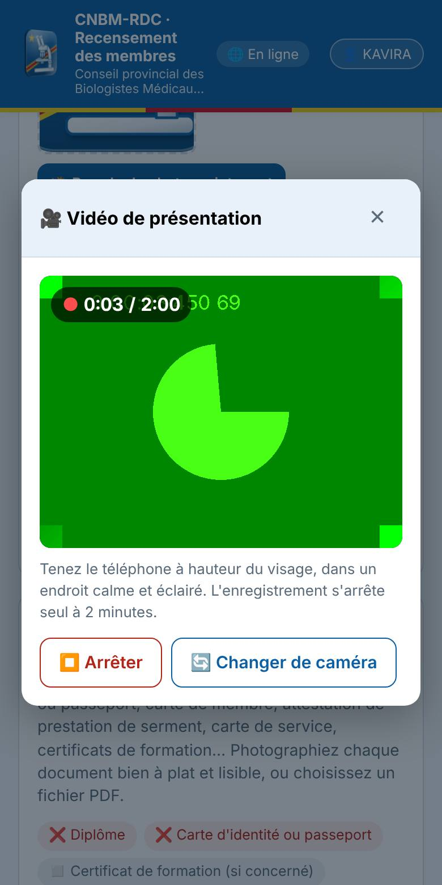
Enregistrement de la vidéo, avec le chronomètre.
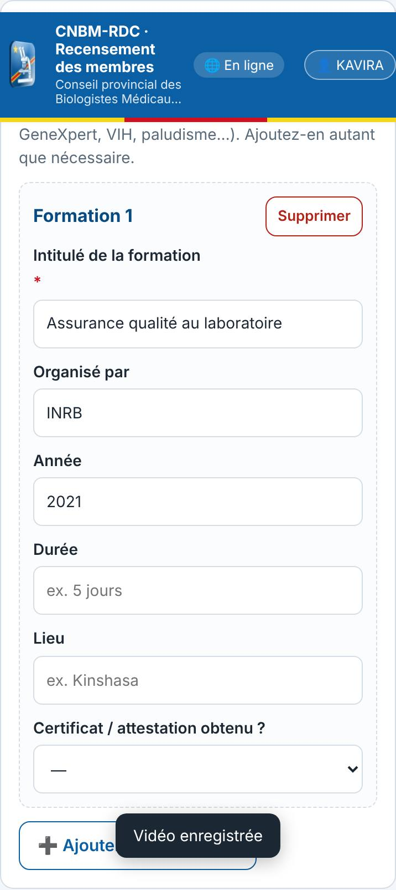
Photo recadrée et vidéo prête.
A6. Ajouter ses pièces justificatives (documents)
La section 9 · Pièces justificatives permet de téléverser les documents dont le CNBM a besoin pour vous identifier.
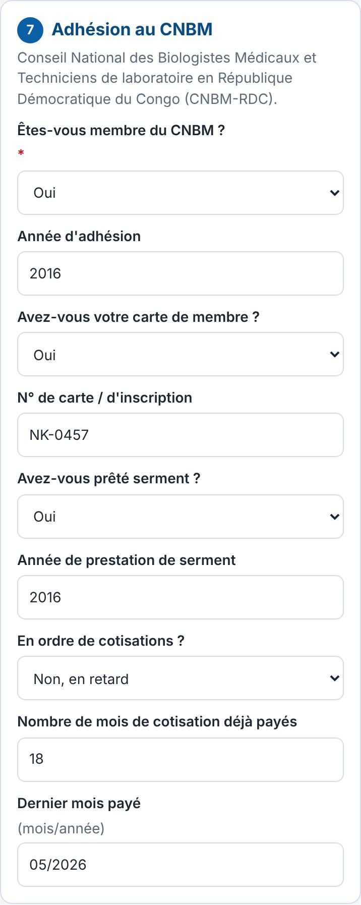
Section 9 : documents attendus, ajout et liste des documents.
Choisissez le type de document : diplôme, carte d'identité / carte d'électeur, passeport, carte de membre CNBM, attestation de prestation de serment, carte de service, certificat / attestation de formation, relevé de notes, reçu de cotisation, acte de naissance, autre document.
Ajoutez si vous voulez une précision (ex. « Diplôme de gradué, ISTM Goma, 2014 »).
Touchez « 📷 Photographier / choisir le document » : prenez le document en photo, ou choisissez une photo ou un PDF déjà enregistré. Vous pouvez en sélectionner plusieurs d'un coup (par exemple le recto et le verso).
Recommencez pour chaque document. « 👁️ Voir » affiche le document, « 🗑️ » le retire.
En haut de la section, des pastilles indiquent les documents attendus :
Obligatoires : le diplôme et une pièce d'identité (carte d'identité/d'électeur ou passeport). Tant qu'ils manquent, la pastille est rouge ❌ et le dossier n'est pas complet.
Selon votre situation (◻️ si concerné) : carte de membre CNBM (si vous avez déclaré avoir votre carte), attestation de serment (si vous avez prêté serment), certificat de formation (si vous avez déclaré des formations).
Photographiez chaque document bien à plat, en pleine lumière, sans reflet, en cadrant tout le document. Les photos sont allégées automatiquement pour l'envoi par e-mail. Un PDF ne doit pas dépasser 10 Mo.
Les documents partent avec votre fiche quand vous l'envoyez au conseil : ils sont ajoutés comme pièces jointes à l'e-mail.
A7. Valider et vérifier son dossier
Cochez la case de consentement (section 10).
Touchez « ✅ Valider et enregistrer ». S'il manque une information, un message indique laquelle et la page s'y place.
si votre dossier est complet : ✅ ce qui est fourni, ❌ ce qui manque, avec le pourcentage ;
si vous êtes membre en règle : carte de membre, serment prêté, cotisations à jour ;
les éléments facultatifs mais recommandés (formations, vidéo, e-mail).
Le récapitulatif s'ouvre aussi depuis l'onglet 📂 Fiches enregistrées (bouton « 📄 Récapitulatif » sur chaque fiche).
« ⬇️ Télécharger mon récapitulatif » enregistre un document avec toutes vos données et la liste de contrôle : gardez-le comme fichier de référence. « 🖨️ Ouvrir pour imprimer / enregistrer en PDF » permet de l'imprimer ou d'en faire un PDF (choisir « Enregistrer au format PDF » comme imprimante).
A8. Envoyer sa fiche au conseil
☁️ Avec la réception automatique (Google Drive ou serveur)
Il n'y a rien à faire de plus : dès que vous touchez « ✅ Valider et enregistrer », la fiche, la photo, la vidéo et les documents partent directement dans l'espace de votre conseil provincial, à l'intérieur de la plateforme (ni e-mail, ni WhatsApp). Sans Internet, la fiche attend et part toute seule au retour de la connexion. Le bouton « ☁️ Envoyer à mon conseil » permet aussi de l'envoyer tout de suite.
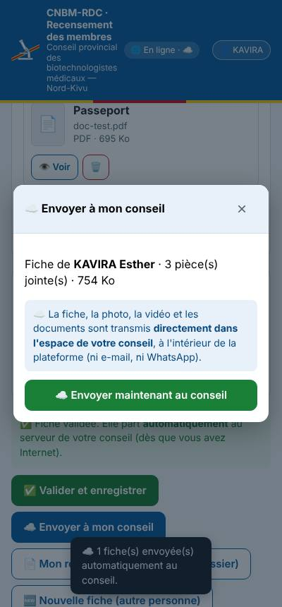
Réception automatique : envoi direct dans l'espace du conseil.
La fiche passe au statut « Envoyée ». Pour que la réception automatique soit active, ouvrez une fois le lien d'inscription envoyé par votre conseil : le ☁️ apparaît alors en haut de l'écran. Avec le serveur, vous retrouvez en plus votre fiche sur un nouveau téléphone.
📱 Sans réception automatique
Quand vous avez Internet, touchez « 📤 Envoyer aux responsables ». L'adresse e-mail de votre conseil s'affiche (bouton « Copier »).
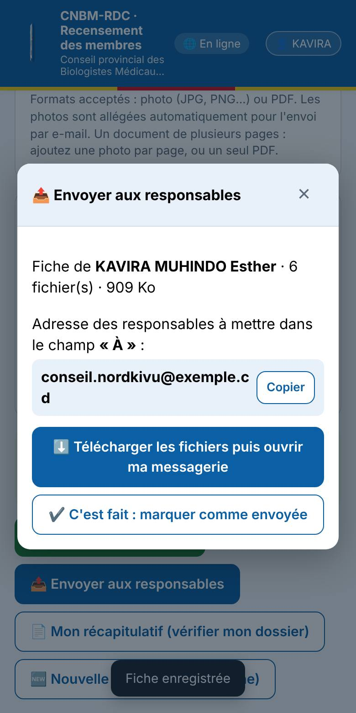
La fenêtre d'envoi.
Sur téléphone
Touchez « 📤 Envoyer avec Gmail / WhatsApp / autre ».
Choisissez Gmail (ou votre application e-mail). La fiche, la photo, la vidéo et vos documents sont déjà joints.
Dans le champ « À », collez l'adresse du conseil (elle a été copiée automatiquement), puis envoyez.
Sur ordinateur
Touchez « ⬇️ Télécharger les fichiers puis ouvrir ma messagerie ». Les fichiers arrivent dans « Téléchargements » : …_fiche.txt, …_photo.jpg, …_video… et un fichier …_doc1_…, …_doc2_… par document.
Votre messagerie s'ouvre avec l'adresse et l'objet remplis : joignez tous ces fichiers et envoyez.
Une fois l'e-mail parti, touchez « ✔️ C'est fait : marquer comme envoyée ».
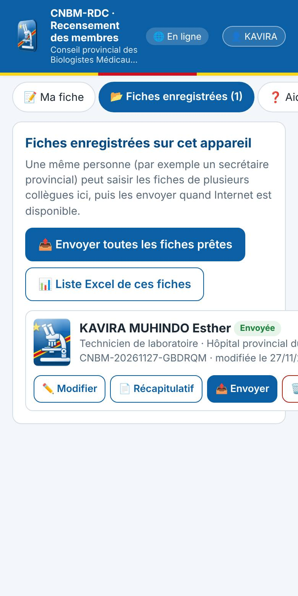
Onglet « Fiches enregistrées » : brouillon, à envoyer, envoyée.
Hors connexion, vous pouvez préparer l'envoi : l'e-mail reste dans la boîte d'envoi de Gmail et part au retour d'Internet. Quand vous êtes connecté, un bandeau vous rappelle les fiches qui restent à envoyer.
Si vous modifiez votre fiche après l'envoi, elle repasse « à envoyer » : renvoyez-la pour que le conseil ait la dernière version.
A9. Demander son adhésion au CNBM
Vous n'êtes pas encore membre ? Dans la section 7, répondez « Non » à « Êtes-vous membre du CNBM ? », puis « Oui, je demande mon adhésion ». Envoyez votre fiche normalement : le conseil la reçoit comme demande d'adhésion et vous contactera pour la carte, le serment et les cotisations.
A10. Questions fréquentes
Question
Réponse
Je peux remplir la fiche de collègues qui n'ont pas de smartphone ?
Oui : « 🆕 Nouvelle fiche (autre personne) ». Toutes les fiches sont dans « 📂 Fiches enregistrées » ; « 📤 Envoyer toutes les fiches prêtes » les envoie en une fois, et « 📊 Liste Excel de ces fiches » en donne la liste.
Je change de téléphone.
Votre compte reste sur l'ancien appareil. Sur le nouveau, créez un nouveau compte et renvoyez votre fiche ; gardez votre récapitulatif comme référence.
Le bouton « Enregistrer maintenant » ne marche pas.
Autorisez la caméra et le micro quand le navigateur le demande, ou utilisez « 📁 Choisir une vidéo » (l'appareil photo du téléphone s'ouvrira).
Mes données sont-elles envoyées à quelqu'un d'autre ?
Non. Elles restent sur votre appareil jusqu'à ce que vous les envoyiez vous-même au conseil par e-mail.
Partie B🏛️ Administrateur d'un conseil
Conseil provincial (ex. Nord-Kivu, Sud-Kivu…) ou bureau national
B1. Obtenir l'abonnement du conseil
Chaque conseil utilise la plateforme grâce à un abonnement (mensuel, trimestriel, semestriel, annuel ou essai gratuit de 30 jours). Après paiement auprès du créateur de la plateforme, le conseil reçoit un message contenant :
une clé d'abonnement : un long texte qui commence par CNBM1.. Elle est réservée aux administrateurs du conseil ;
un lien d'inscription : à partager aux membres.
Les fiches des membres seront envoyées à l'adresse e-mail du conseil indiquée lors de la souscription.
Ne communiquez jamais la clé d'abonnement aux membres : elle permet de créer des comptes administrateurs. Aux membres, donnez uniquement le lien d'inscription.
B2. Créer le compte administrateur
Utilisez de préférence un ordinateur du conseil (le registre y sera conservé).
Ouvrez l'application, puis, en bas de l'écran d'accueil, « 🏛️ Je suis responsable d'un conseil provincial : créer un compte administrateur ».
Saisissez votre nom, votre téléphone ou e-mail, un mot de passe d'au moins 8 caractères.
Collez la clé d'abonnement en entier.
Touchez « Créer le compte administrateur », puis notez votre code de récupération.
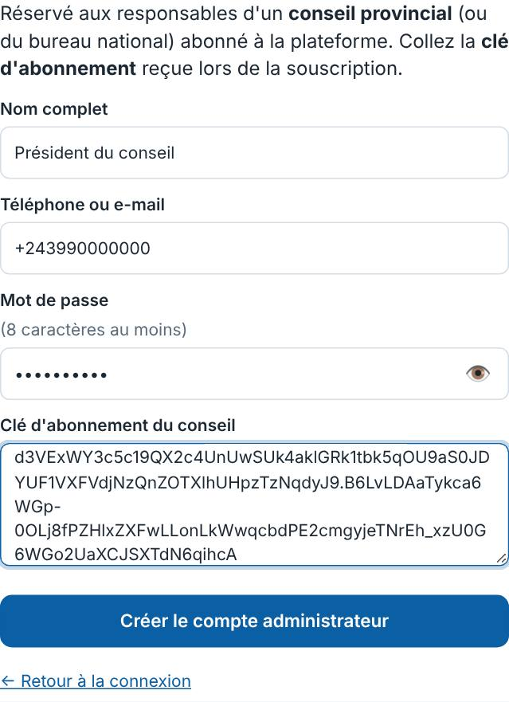
Création du compte administrateur avec la clé d'abonnement.
L'application vérifie la clé sans Internet. Une clé incomplète, modifiée ou expirée est refusée.
B3. Inviter les membres
Dans l'onglet 🏛️ Espace responsables, la carte 📜 Abonnement affiche le conseil, la date de fin, l'adresse de réception et le lien d'inscription des membres.
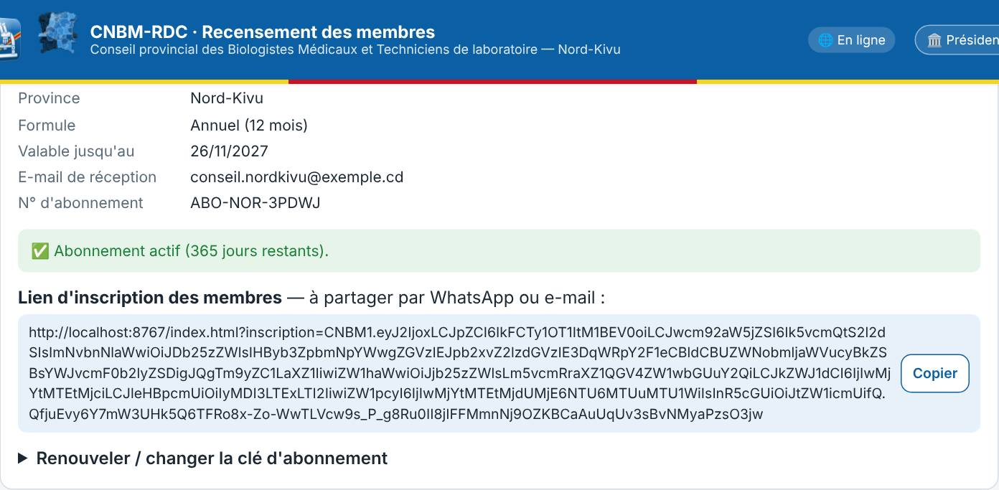
La carte Abonnement et le lien d'inscription à partager.
Touchez « Copier » à côté du lien.
Partagez-le dans les groupes WhatsApp du conseil, par SMS ou par e-mail, avec un court message, par exemple : « Chers collègues, ouvrez ce lien, créez votre compte et remplissez votre fiche de recensement avant le … ».
Joignez si possible la partie A de ce manuel.
B4. Recevoir les fiches
☁️ Activer la réception automatique gratuite (Google Drive)
Sans serveur payant, le conseil peut recevoir les fiches automatiquement, sans e-mail ni WhatsApp, grâce à un petit script gratuit installé sur un compte Gmail du conseil. Les fiches, photos, vidéos et documents sont rangés dans son Google Drive (un dossier par membre), avec un tableau Google Sheets « Registre ». La mise en place prend environ 15 minutes, une seule fois, sur un ordinateur :
Espace responsables → carte « ☁️ Réception automatique des fiches (Google Drive, gratuit) » → ouvrez le guide pas à pas et téléchargez le script Code.gs (aussi en PDF : CNBM_Guide_Google_Drive.pdf).
Sur https://script.google.com, avec le compte Gmail du conseil : nouveau projet, collez le script, exécutez « initialiser », puis notez la clé d'accès administrateur.
Déployer → Nouveau déploiement → Application Web, « Exécuter en tant que : Moi », « Qui peut accéder : Tout le monde » → copiez l'adresse qui se termine par /exec.
Dans l'application, collez l'adresse et la clé, puis « 🔌 Tester et enregistrer ».
Copiez le lien d'inscription des membres de la carte « Abonnement » (il contient maintenant l'adresse de réception) et partagez-le.
☁️ Avec la réception automatique (Google Drive ou serveur)
Les fiches envoyées par les membres arrivent directement dans votre Espace responsables, avec la photo, la vidéo et les pièces justificatives : pas d'e-mail, pas de WhatsApp, pas d'import. Le registre se met à jour à chaque ouverture de l'Espace responsables ; le bouton « 🔄 Synchroniser avec le serveur » le rafraîchit à tout moment. Les fiches reçues par le serveur portent le signe ☁️. Les photos, vidéos et documents se téléchargent à l'ouverture de la fiche.
Vous ne voyez que les fiches de votre province ; le bureau national voit toutes les provinces. Accepter une adhésion, réinitialiser un mot de passe ou nommer un administrateur s'appliquent directement sur le serveur, pour tous les appareils.
📱 Sans serveur : import des pièces jointes
Chaque membre envoie un e-mail avec ses pièces jointes : …_fiche.txt, …_photo.jpg, éventuellement la vidéo, et un fichier …_docN_… (photo ou PDF) par pièce justificative.
Ouvrez les e-mails reçus et téléchargez toutes les pièces jointes (dans Gmail : « Tout télécharger »).
Dans l'Espace responsables, touchez « 📥 Importer des fiches reçues ».
Sélectionnez tous les fichiers d'un coup (fiches, photos, vidéos et documents de plusieurs membres) : l'application rattache chaque photo, vidéo et document à la bonne fiche.
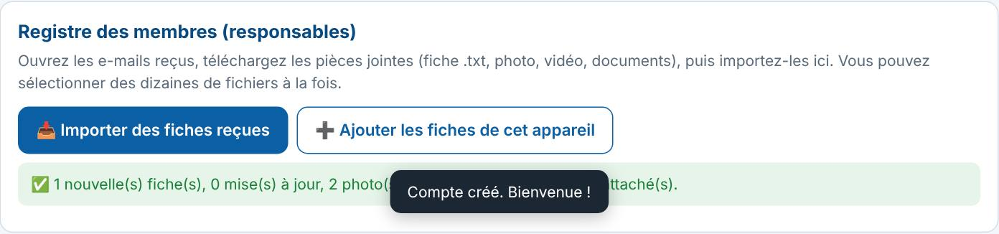
Le compte rendu de l'import.
Une fiche importée une deuxième fois (membre qui a corrigé sa fiche) est mise à jour, pas dupliquée.
Si une photo, une vidéo ou un document est signalé « sans fiche correspondante », importez aussi le fichier _fiche.txt du même membre.
Si un administrateur saisit lui-même des fiches sur son appareil, « ➕ Ajouter les fiches de cet appareil » les verse au registre.
B5. Consulter le registre
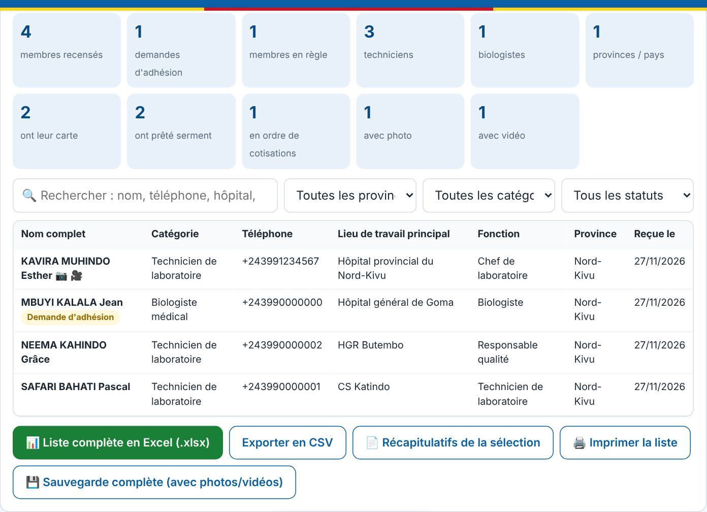
Statistiques, filtres et liste des membres.
Statistiques : membres recensés, demandes d'adhésion, membres en règle, techniciens, biologistes, provinces, cartes, serments, cotisations à jour, photos, vidéos.
Recherche : nom, téléphone, hôpital, ville… (plusieurs mots possibles).
Filtres : province, catégorie, et statut (demandes d'adhésion, membres en règle, sans carte de membre, sans serment, cotisations en retard). Les statistiques et les exports suivent les filtres.
Fiche détaillée : touchez une ligne pour voir toutes les données, la photo, la vidéo et les pièces justificatives, imprimer la fiche, télécharger la vidéo ou retirer la fiche du registre.
Télécharger le récapitulatif d'un membre
Dans la fiche détaillée, « 📄 Récapitulatif (télécharger / PDF) » affiche la liste de contrôle du dossier (complet ou non, membre en règle ou non) et permet de télécharger le document récapitulatif du membre, avec sa photo, ou de l'imprimer / enregistrer en PDF.
Sous le registre, « 📄 Récapitulatifs de la sélection » réunit dans un seul document les récapitulatifs de tous les membres affichés (une page par membre). Filtrez d'abord, par exemple « Demandes d'adhésion » ou une catégorie, pour ne garder que les fiches utiles.
Vérifier les pièces justificatives
Dans la fiche détaillée, la rubrique « Pièces justificatives » montre chaque document (aperçu des photos, icône 📄 pour les PDF). Touchez un document pour l'ouvrir ou le télécharger. « fichier non importé » signifie que le fichier joint à l'e-mail n'a pas encore été importé.
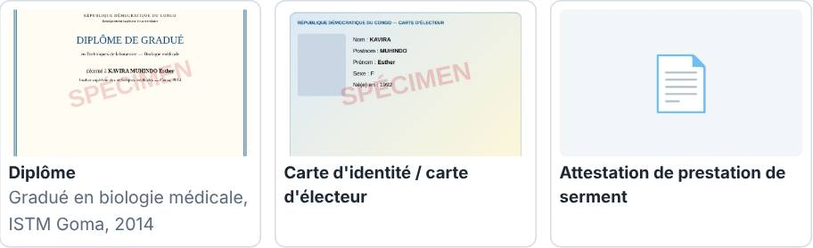
Les pièces justificatives d'un membre, dans sa fiche détaillée.
Avant d'accepter une adhésion ou de délivrer une carte, comparez le nom du diplôme et de la pièce d'identité avec la fiche.
B6. Traiter les demandes d'adhésion
Filtre de statut → « Demandes d'adhésion ».
Ouvrez la fiche du candidat, puis touchez « ✅ Accepter l'adhésion ».
Saisissez le numéro de carte attribué (facultatif). La fiche passe « Membre : Oui » avec l'année en cours.
Prévenez le candidat (son téléphone est affiché) pour la remise de la carte, le serment et les cotisations.
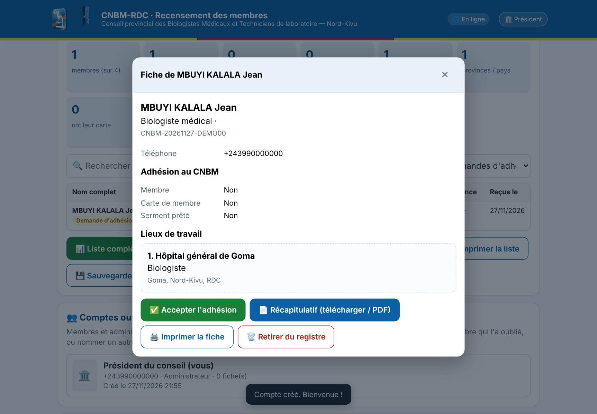
La fiche d'un candidat et le bouton « Accepter l'adhésion ».
B7. Liste Excel, impression, sauvegarde
📊 Liste complète en Excel (.xlsx) : un fichier Excel avec toutes les personnes inscrites et toutes leurs données, en trois feuilles :
Membres : une ligne par personne (identité, contacts, adresse, diplômes, carrière, lieu principal, formations, adhésion, carte, serment, cotisations, documents fournis, « diplôme fourni », « pièce d'identité fournie », « membre en règle », « dossier complet ») ;
Lieux de travail : une ligne par lieu de travail ;
Formations : une ligne par formation.
Relancez l'export après chaque import pour avoir la liste à jour.
Exporter en CSV : même liste au format texte.
🖨️ Imprimer la liste.
💾 Sauvegarde complète : un fichier contenant tout le registre avec photos, vidéos et pièces justificatives. Il se réimporte avec « 📥 Importer » (sur le même ordinateur ou un autre).
Le registre est conservé dans le navigateur de l'ordinateur. Si on efface les données du navigateur, il disparaît. Faites une sauvegarde complète chaque semaine et gardez-la sur une clé USB ou un disque.
Si l'abonnement expire, l'import et l'export du registre sont bloqués jusqu'au renouvellement. Les données ne sont pas effacées.
B8. Gérer les comptes
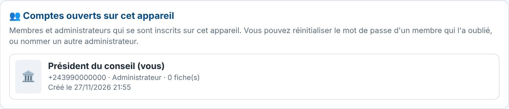
Les comptes ouverts sur cet appareil.
🔑 Réinitialiser le mot de passe d'un membre qui a tout oublié : un mot de passe provisoire s'affiche, à lui communiquer (il le changera dans « Mon compte »).
Nommer admin / Retirer admin : donner ou retirer les droits d'administrateur à un compte de cet appareil (ex. le secrétaire du conseil).
Mon compte (votre nom en haut à droite) : changer de mot de passe, nouveau code de récupération, se déconnecter.
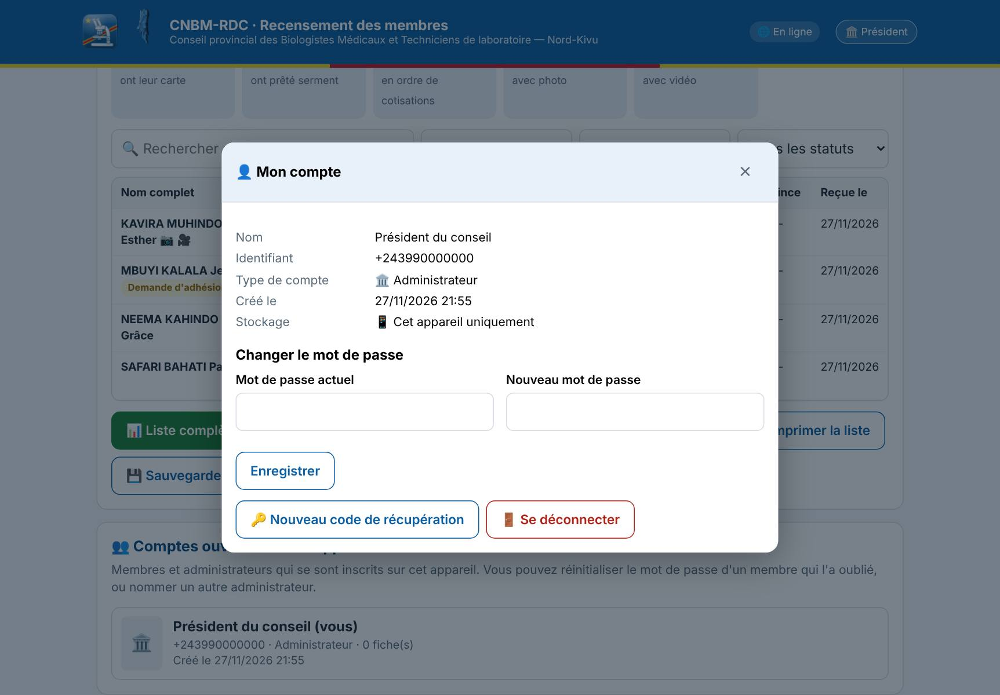
La fenêtre « Mon compte ».
⚙️ Paramètres d'envoi : adresse e-mail de réception de secours, utilisée seulement si aucun abonnement n'est actif.
B9. Renouveler l'abonnement
La carte Abonnement vous prévient 30 jours avant la fin.
Payez le renouvellement auprès du créateur : vous recevez une nouvelle clé d'abonnement.
Carte Abonnement → « Renouveler / changer la clé d'abonnement » → collez la nouvelle clé → « Activer la clé ».
Le registre et les comptes sont conservés. Le lien d'inscription change avec la nouvelle clé : partagez le nouveau lien. Les membres déjà inscrits n'ont rien à faire.
B10. Conseil national
Le bureau national reçoit un abonnement « National (toutes les provinces) ». Il peut importer les fiches de toutes les provinces, ou les sauvegardes complètes envoyées par les conseils provinciaux, et utiliser le filtre « province » pour comparer les provinces. La liste Excel nationale regroupe alors tous les membres du pays.
Partie C✍️ Créateur de la plateforme
Délivrer, suivre et renouveler les abonnements des conseils
C1. Votre clé privée de créateur
Votre accès repose sur un fichier : CLE-PRIVEE-CREATEUR-CNBM.json. C'est lui qui signe les clés d'abonnement. L'application de chaque conseil vérifie cette signature : sans votre fichier, personne ne peut fabriquer ni prolonger un abonnement, même en possédant l'application.
Gardez au moins deux copies du fichier : par exemple une clé USB rangée en lieu sûr, et votre propre e-mail ou stockage personnel.
Ne l'envoyez à personne, ne le déposez pas dans le dépôt GitHub, ne le partagez pas sur WhatsApp.
Sur votre ordinateur, ouvrez https://jacquesdunia2015-commits.github.io/JACK_M/cnbm/createur.html (ou le fichier createur.html en double-cliquant dessus).
Touchez « 📂 Charger ma clé » et choisissez votre fichier CLE-PRIVEE-CREATEUR-CNBM.json.
Option « Se souvenir de la clé sur cet ordinateur » : cochez-la uniquement sur votre ordinateur personnel. Sinon, rechargez la clé à chaque visite.
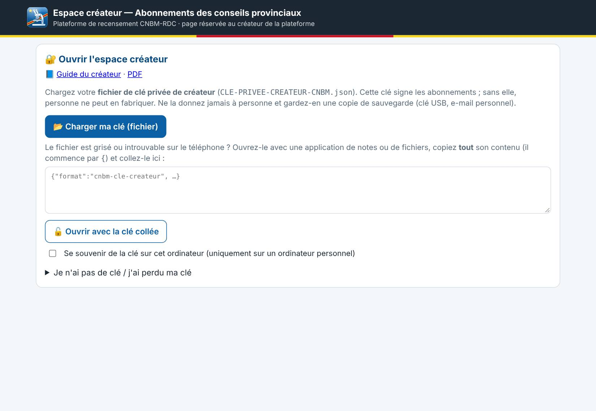
L'espace créateur s'ouvre avec votre fichier de clé.
Pour refermer l'espace (ordinateur partagé), touchez « 🔒 Fermer l'espace créateur » en bas de page : la clé mémorisée est effacée.
C3. Délivrer un abonnement à un conseil
Après avoir reçu le paiement du conseil (M-Pesa, Orange Money, Airtel Money, virement…), remplissez le formulaire « ➕ Nouvel abonnement / renouvellement » :
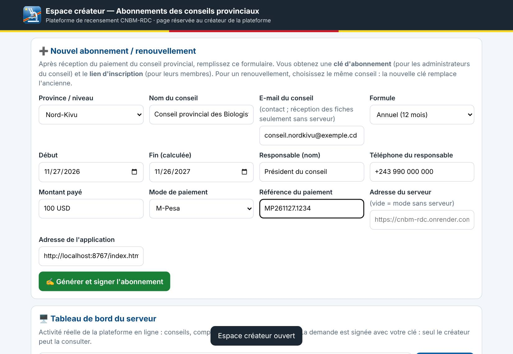
Le formulaire de création d'abonnement.
Champ
À saisir
Province / niveau
L'une des 26 provinces, ou « National (toutes les provinces) »
Nom du conseil
Rempli automatiquement, modifiable (ex. « Conseil provincial des Biologistes Médicaux et Techniciens de laboratoire — Nord-Kivu »)
E-mail de réception
L'adresse où les membres enverront leurs fiches (celle du conseil)
Formule
Mensuel, trimestriel, semestriel, annuel ou essai gratuit de 30 jours. La date de fin se calcule seule (modifiable)
Début
Date de départ de l'abonnement
Responsable, téléphone
Pour vos contacts et l'envoi par WhatsApp
Montant, mode et référence du paiement
Pour votre suivi (ils ne sont pas inscrits dans la clé)
Adresse de l'application
Préremplie ; elle sert à construire le lien d'inscription des membres
La clé d'abonnement, le lien d'inscription et les boutons d'envoi.
la clé d'abonnement, pour les administrateurs du conseil ;
le lien d'inscription, pour les membres du conseil ;
un numéro d'abonnement (ex. ABO-NOR-E8JAF).
C4. Transmettre l'abonnement au conseil
« 📋 Copier le message complet à envoyer au conseil » : un message prêt, avec la clé, le lien, les dates et les instructions.
WhatsApp : ouvre une conversation avec le responsable, message prérempli (si son téléphone est saisi).
✉️ E-mail : ouvre votre messagerie vers l'adresse du conseil, message prérempli.
Envoyez aussi au conseil la partie B de ce manuel pour ses administrateurs et la partie A pour ses membres.
C4 bis. Réception automatique : Google Drive aujourd'hui, serveur plus tard
En attendant un serveur, chaque conseil peut activer gratuitement la réception automatique par Google Drive (voir la partie B, « Recevoir les fiches », et le guide CNBM_Guide_Google_Drive.pdf). Vous n'avez rien à faire de votre côté : l'administrateur du conseil relie lui-même son Google Drive, et son lien d'inscription inclut l'adresse de réception.
Le serveur en ligne (plus tard)
Une fois le serveur installé (voir cnbm/serveur/LISEZ-MOI.md), ouvrez l'espace créateur depuis l'adresse du serveur (https://<votre-serveur>/createur.html). Le champ « Adresse du serveur » du formulaire d'abonnement est alors rempli tout seul : les clés et les liens d'inscription délivrés renvoient vers le serveur, et les fiches des membres arrivent dans l'espace du conseil.
La rubrique « 🖥️ Tableau de bord du serveur » (bouton « 🔄 Actualiser ») montre l'activité réelle : conseils, abonnements actifs, comptes ouverts, fiches reçues, volume des fichiers, et, pour chaque conseil, le nombre d'administrateurs, de membres inscrits et de fiches reçues. La demande est signée avec votre clé : vous seul pouvez la consulter.
Pour basculer un conseil déjà abonné vers le serveur, délivrez-lui un renouvellement (bouton « Renouveler ») : sa nouvelle clé et son nouveau lien pointent vers le serveur.
C5. Suivre et renouveler les abonnements
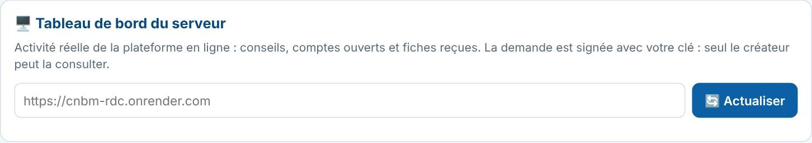
Le registre des abonnements.
Tableau de bord : conseils abonnés actifs, à renouveler (30 jours ou moins), expirés, provinces sans abonnement, nombre total de clés délivrées.
Liste : pour chaque clé, le conseil, la formule, la date de fin, le statut (Actif, X j restants, Expiré, « remplacé » quand une clé plus récente existe), le paiement et l'e-mail.
Voir : réafficher la clé, le lien et les boutons d'envoi.
Renouveler : préremplit le formulaire avec le même conseil, et un début au lendemain de la fin actuelle. Vérifiez la formule et le paiement, générez, puis envoyez la nouvelle clé au conseil (il la colle dans « Renouveler / changer la clé d'abonnement »).
📊 Exporter : la liste des abonnements au format Excel/CSV (comptabilité).
💾 Sauvegarder le registre / 📥 Restaurer un registre : ce registre est conservé dans le navigateur de votre ordinateur. Sauvegardez-le après chaque nouvel abonnement, et restaurez-le sur un nouvel ordinateur.
Pour suspendre un conseil qui ne paie plus, il suffit de ne pas renouveler : à la date de fin, l'import et l'export de son registre se bloquent automatiquement. Une clé déjà délivrée ne peut pas être annulée avant sa date de fin. Préférez donc des formules courtes pour un nouveau conseil.
C6. Sécurité et perte de la clé
Clé perdue (aucune copie) : dans l'espace créateur, « Je n'ai pas de clé / j'ai perdu ma clé » → « 🔑 Créer une nouvelle clé de créateur ». Un nouveau fichier est téléchargé et une clé publique s'affiche. Elle doit être ajoutée dans cnbm/index.html (liste CLES_PUBLIQUES_CREATEUR), puis l'application doit être republiée. Les abonnements déjà délivrés restent valables tant que l'ancienne clé publique reste dans la liste.
Clé volée (quelqu'un d'autre l'a eue) : créez une nouvelle clé, remplacez l'ancienne clé publique par la nouvelle dans index.html, republiez, puis délivrez de nouvelles clés à tous les conseils.
La page createur.html est publique, mais elle ne sert à rien sans votre fichier de clé.
Dépannage
Problème
Solution
« Aucun compte avec ce téléphone/e-mail sur cet appareil »
Le compte a été créé sur un autre appareil ou dans un autre navigateur. Utilisez le même appareil et le même navigateur, ou créez un compte ici.
L'application dit « Hors ligne »
Vous pouvez continuer à remplir la fiche ; seul l'envoi demande Internet.
Message « Ce navigateur bloque l'enregistrement local »
Vous êtes en navigation privée : ouvrez l'application dans une fenêtre normale.
Gmail refuse l'envoi (fichier trop lourd, plus de 25 Mo)
Remplacez les gros PDF par des photos des pages, retirez la vidéo et enregistrez-la avec « 🎥 Enregistrer maintenant » (format léger), ou envoyez les fiches une par une.
Un document photographié est illisible
Retirez-le (🗑️) et reprenez la photo à la lumière du jour, le document bien à plat.
Le lien d'inscription est déclaré invalide
Il a été coupé en le copiant : demandez au conseil de le renvoyer en entier.
« Clé d'abonnement invalide »
La clé a été coupée ou modifiée : copiez-la en entier, sans ajouter d'espace ni de retour à la ligne au milieu.
« Cette clé a expiré »
Demandez un renouvellement au créateur de la plateforme.
Une photo n'apparaît pas après l'import
Importez la photo en même temps que le fichier _fiche.txt du même membre (même identifiant au début du nom).
Changement d'ordinateur
Administrateur : sauvegarde complète, puis import sur le nouvel ordinateur et création d'un compte avec la clé d'abonnement. Créateur : sauvegarde du registre, puis restauration et chargement de la clé.
La nouvelle version n'apparaît pas
Fermez complètement l'application, puis rouvrez-la avec Internet.
Glossaire
Fiche
L'ensemble des informations d'une personne recensée.
Récapitulatif
Document téléchargeable qui reprend la fiche et indique si le dossier est complet et si le membre est en règle.
Membre en règle
Membre du CNBM qui a sa carte, a prêté serment et est à jour de ses cotisations.
Registre
La liste des fiches reçues par un conseil, dans l'Espace responsables.
Clé d'abonnement
Texte signé (commençant par CNBM1.) qui active l'Espace responsables d'un conseil jusqu'à une date donnée.
Lien d'inscription
Adresse à partager aux membres, qui les rattache à leur conseil.
Code de récupération
Code donné à la création d'un compte, pour changer un mot de passe oublié.
Manuel d'utilisation — Plateforme de recensement CNBM-RDC · version de novembre 2026 · Les captures d'écran montrent des données fictives.